Grain Reconstruction
Grain Reconstruction from EBSD data.
Let us first import some example EBSD data and restrict it to a subregion of interest.
close all; plotx2east mtexdata forsterite ebsd = ebsd(inpolygon(ebsd,[5 2 10 5]*10^3)); plot(ebsd)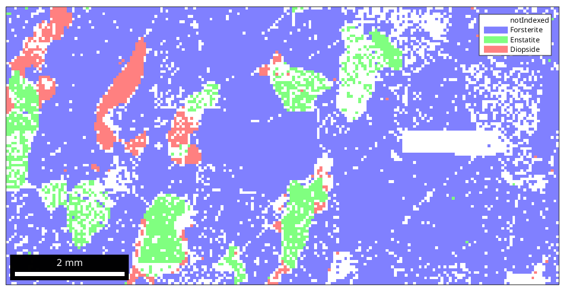
Basic grain reconstruction
We see that there are a lot of not indexed measurements. For grain reconstruction, we have three different choices how to deal with these unindexed regions:
- leaf them unindexed
- assign them to the surrounding grains
- a mixture of both, e.g., assign small notindexed regions to the surrounding grains but keep large notindexed regions
By default, MTEX uses the first method.
The second parameter that is involved in grain reconstruction is the threshold misorientation angle indicating a grain boundary. By default, this value is set to 10 degrees.
All grain reconstruction methods in MTEX are accessible via the command calcGrains which takes as input an EBSD data set and returns a list of grain.
grains = calcGrains(ebsd,'angle',10*degree)
grains = grain2d
Phase Grains Pixels Mineral Symmetry Crystal reference frame
0 1139 4052 notIndexed
1 244 14093 Forsterite mmm
2 177 1397 Enstatite mmm
3 104 759 Diopside 12/m1 X||a, Y||b, Z||c*
boundary segments: 10422
triple points: 905
Properties: GOS, meanRotation
The reconstructed grains are stored in the variable grains. Note that also the notIndexed measurements are grouped into grains. This allows later to analyze the shape of these unindexed regions.
To visualize the grains we can plot its boundaries by the command plotBoundary.
% start overide mode hold on % plot the boundary of all grains plot(grains.boundary,'linewidth',1.5) % stop overide mode hold off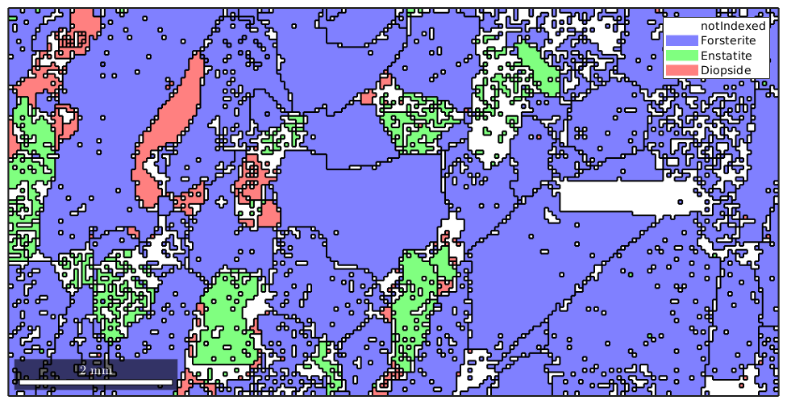
The grainId and how to select EBSD inside specific grains
Besides, the list of grains the command calcGrains returns also two other output arguments.
[grains,ebsd.grainId,ebsd.mis2mean] = calcGrains(ebsd,'angle',7.5*degree);
grains
ebsd
grains = grain2d
Phase Grains Pixels Mineral Symmetry Crystal reference frame
0 1139 4052 notIndexed
1 245 14093 Forsterite mmm
2 177 1397 Enstatite mmm
3 105 759 Diopside 12/m1 X||a, Y||b, Z||c*
boundary segments: 10430
triple points: 911
Properties: GOS, meanRotation
ebsd = EBSD
Phase Orientations Mineral Color Symmetry Crystal reference frame
0 4052 (20%) notIndexed
1 14093 (69%) Forsterite light blue mmm
2 1397 (6.9%) Enstatite light green mmm
3 759 (3.7%) Diopside light red 12/m1 X||a, Y||b, Z||c*
Properties: bands, bc, bs, error, mad, x, y, grainId, mis2mean
Scan unit : um
The second output argument grainId is a list with the same size as the EBSD measurements that stores for each measurement the corresponding grainId. The above syntax stores this list directly inside the ebsd variable. This enables MTEX to select EBSD data by grains. The following command returns all the EBSD data that belong to grain number 33.
ebsd(grains(33))
ans = EBSD
Phase Orientations Mineral Color Symmetry Crystal reference frame
3 5 (100%) Diopside light red 12/m1 X||a, Y||b, Z||c*
Id Phase phi1 Phi phi2 bands bc bs error mad x y grainId phi1 Phi phi2
29476 3 170 80 42 7 140 255 0 1 9750 2000 33 346 0 14
29477 3 171 80 42 7 137 234 0 1 9800 2000 33 189 1 170
29478 3 171 79 41 7 152 245 0 1.1 9850 2000 33 302 1 59
29479 3 170 81 42 7 105 153 0 0.8 9900 2000 33 122 1 239
30208 3 170 79 42 7 110 211 0 0.8 9750 2050 33 331 1 29
Scan unit : um
and is equivalent to the command
ebsd(ebsd.grainId == 33)
ans = EBSD
Phase Orientations Mineral Color Symmetry Crystal reference frame
3 5 (100%) Diopside light red 12/m1 X||a, Y||b, Z||c*
Id Phase phi1 Phi phi2 bands bc bs error mad x y grainId phi1 Phi phi2
29476 3 170 80 42 7 140 255 0 1 9750 2000 33 346 0 14
29477 3 171 80 42 7 137 234 0 1 9800 2000 33 189 1 170
29478 3 171 79 41 7 152 245 0 1.1 9850 2000 33 302 1 59
29479 3 170 81 42 7 105 153 0 0.8 9900 2000 33 122 1 239
30208 3 170 79 42 7 110 211 0 0.8 9750 2050 33 331 1 29
Scan unit : um
Misorientation to mean orientation
The third output argument is again a list of the same size as the ebsd measurements. The entries are the misorientation to the mean orientation of the corresponding grain.
plot(ebsd,ebsd.mis2mean.angle ./ degree) hold on plot(grains.boundary) hold off mtexColorbar
e =
PropertyEvent with properties:
AffectedObject: [1×1 ColorBar]
Source: [1×1 matlab.graphics.internal.GraphicsMetaProperty]
EventName: 'PostSet'
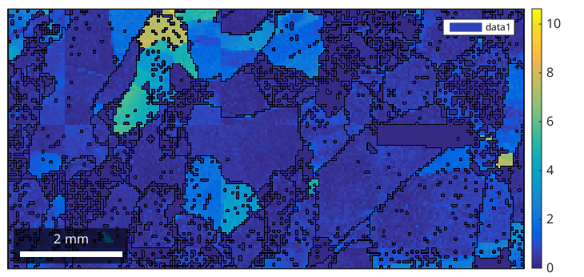 We can examine the misorientation to mean for one specific grain as follows
% select a grain by coordinates myGrain = grains(9075,3275) plot(myGrain.boundary,'linewidth',2) % plot mis2mean angle for this specific grain hold on plot(ebsd(myGrain),ebsd(myGrain).mis2mean.angle ./ degree) hold off mtexColorbar
myGrain = grain2d
Phase Grains Pixels Mineral Symmetry Crystal reference frame
1 1 497 Forsterite mmm
boundary segments: 294
triple points: 32
Id Phase Pixels GOS phi1 Phi phi2
762 1 497 0.0443014 131 64 248
e =
PropertyEvent with properties:
AffectedObject: [1×1 ColorBar]
Source: [1×1 matlab.graphics.internal.GraphicsMetaProperty]
EventName: 'PostSet'
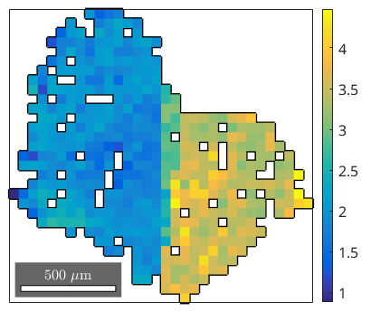
Filling notindexed holes
It is important to understand that MTEX distinguishes the following two situations
- a location is marked as notindexed
- a location does not occur in the data set
A location marked as notindexed is interpreted by MTEX as at this position, there is no crystal, whereas for a location that does not occur in the data set is interpreted by MTEX as: it is not known whether there is a crystal or not. Just to remind you, the later assumption is nothing special as it applies at all locations but the measurement points.
A location that does not occur in the data is assigned in MTEX to the same grain and phase as the closest measurement point - this may also be a notindexed point. Hence, filling holes in MTEX means to erase them from the list of measurements, i.e., instead of telling MTEX there is no crystal we are telling MTEX: we do not know what there is.
The extremal case is to say whenever there is a not indexed measurement we actually do not know anything and allow MTEX to freely guess what happens there. This is realized by removing all not indexed measurements or, equivalently, computing the grains only from the indexed measurements
% compute the grains from the indexed measurements only grains = calcGrains(ebsd('indexed')) plot(ebsd) % start overide mode hold on % plot the boundary of all grains plot(grains.boundary,'linewidth',1.5) % mark two grains by location plot(grains(11300,6100).boundary,'linecolor','m','linewidth',2,... 'DisplayName','grain A') plot(grains(12000,4000).boundary,'linecolor','r','linewidth',2,... 'DisplayName','grain B') % stop overide mode hold off
grains = grain2d
Phase Grains Pixels Mineral Symmetry Crystal reference frame
1 103 14093 Forsterite mmm
2 32 1397 Enstatite mmm
3 71 759 Diopside 12/m1 X||a, Y||b, Z||c*
boundary segments: 3784
triple points: 240
Properties: GOS, meanRotation
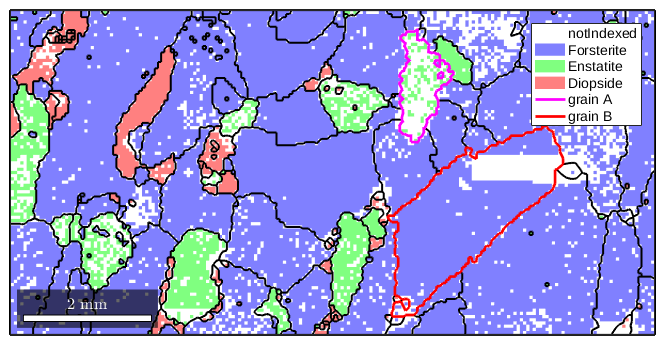 We observe, especially in the marked grains, how MTEX fills notindexed regions and connects otherwise separate measurements to grains. As all information about not indexed regions were removed the reconstructed grains fill the map completely
plot(grains,'linewidth',2)
Inside of grain B, there is a large not indexed region and we might argue that is not very meaningful to assign such a large region to some grain but should have kept it not indexed. In order to decide which not indexed region is large enough to be kept not indexed and which not indexed regions can be filled it is helpful to know that the command calcGrains also separates the not indexed regions into "grains" and we can standard grain functions like area or perimeter to analyze these regions.
[grains,ebsd.grainId,ebsd.mis2mean] = calcGrains(ebsd);
notIndexed = grains('notIndexed')
notIndexed = grain2d
Phase Grains Pixels Mineral Symmetry Crystal reference frame
0 1139 4052 notIndexed
boundary segments: 8694
triple points: 868
Properties: GOS, meanRotation
We see that we have 1139 not indexed regions. A good measure for compact regions vs. cluttered regions is the quotient between the area and the boundary length.
% plot the not indexed regions colorcoded according the the quotient between % number of measurements and number of boundary segments plot(notIndexed,log(notIndexed.grainSize ./ notIndexed.boundarySize)) mtexColorbar
e =
PropertyEvent with properties:
AffectedObject: [1×1 ColorBar]
Source: [1×1 matlab.graphics.internal.GraphicsMetaProperty]
EventName: 'PostSet'
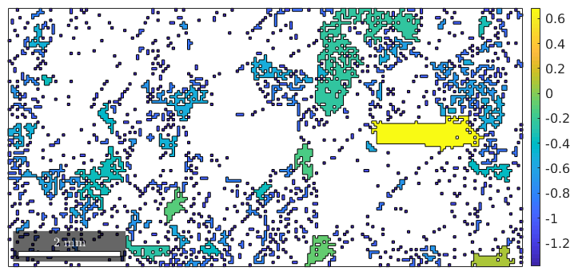 Regions with a high quotient are blocks which can be hardly correctly assigned to a grain. Hence, we should keep these regions as not indexed and only remove the not indexed information from locations with a low quotient.
% the "not indexed grains" we want to remove toRemove = notIndexed(notIndexed.grainSize ./ notIndexed.boundarySize<0.8) % now we remove the corresponding EBSD measurements ebsd(toRemove) = [] % and perform grain reconstruction with the reduces EBSD data set [grains,ebsd.grainId,ebsd.mis2mean] = calcGrains(ebsd); plot(grains)
toRemove = grain2d
Phase Grains Pixels Mineral Symmetry Crystal reference frame
0 1134 3442 notIndexed
boundary segments: 8256
triple points: 837
Properties: GOS, meanRotation
ebsd = EBSD
Phase Orientations Mineral Color Symmetry Crystal reference frame
0 610 (3.6%) notIndexed
1 14093 (84%) Forsterite light blue mmm
2 1397 (8.3%) Enstatite light green mmm
3 759 (4.5%) Diopside light red 12/m1 X||a, Y||b, Z||c*
Properties: bands, bc, bs, error, mad, x, y, grainId, mis2mean
Scan unit : um
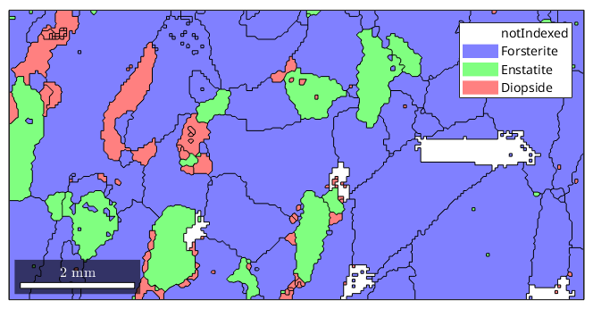 We see that there are some, not indexed regions are left blank. Finally, the image with the raw EBSD data and on top the grain boundaries.
% plot the raw data plot(ebsd) % start overide mode hold on % plot the boundary of all grains plot(grains.boundary,'linewidth',1.5) % mark two grains by location plot(grains(11300,6100).boundary,'linecolor','m','linewidth',2,... 'DisplayName','grain A') plot(grains(12000,4000).boundary,'linecolor','r','linewidth',2,... 'DisplayName','grain B') % stop overide mode hold off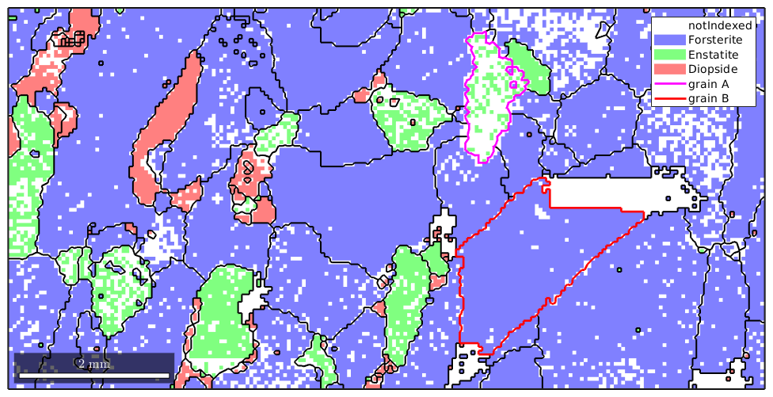
Non convex data sets
By default MTEX uses the convex hull when computing the outer boundary for an EBSD data set. This leads to poor results in the case of non convex EBSD data sets
% cut of a non convex region from our previous data set poly = 1.0e+04 *[... 0.6853 0.2848 0.7102 0.6245 0.8847 0.3908 1.1963 0.6650 1.1371 0.2880 0.6853 0.2833 0.6853 0.2848]; ebsdP = ebsd(ebsd.inpolygon(poly)) plot(ebsdP,'micronBar','off') legend off % compute the grains grains = calcGrains(ebsdP('indexed')) % plot the grain boundary hold on plot(grains.boundary,'linewidth',1.5) hold off
ebsdP = EBSD
Phase Orientations Mineral Color Symmetry Crystal reference frame
0 107 (3%) notIndexed
1 2756 (78%) Forsterite light blue mmm
2 452 (13%) Enstatite light green mmm
3 231 (6.5%) Diopside light red 12/m1 X||a, Y||b, Z||c*
Properties: bands, bc, bs, error, mad, x, y, grainId, mis2mean
Scan unit : um
grains = grain2d
Phase Grains Pixels Mineral Symmetry Crystal reference frame
1 26 2756 Forsterite mmm
2 8 452 Enstatite mmm
3 22 231 Diopside 12/m1 X||a, Y||b, Z||c*
boundary segments: 1024
triple points: 66
Properties: GOS, meanRotation
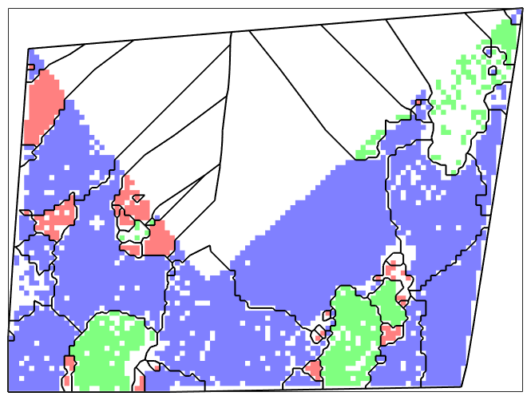 We see that the grains badly fill up the entire convex hull of the data points. This can be avoided by specifying the option tight for the determination of the outer boundary.
plot(ebsdP,'micronBar','off') legend off % compute the grains grains = calcGrains(ebsdP('indexed'),'boundary','tight') % plot the grain boundary hold on plot(grains.boundary,'linewidth',1.5) hold off
grains = grain2d
Phase Grains Pixels Mineral Symmetry Crystal reference frame
1 28 2756 Forsterite mmm
2 9 452 Enstatite mmm
3 22 231 Diopside 12/m1 X||a, Y||b, Z||c*
boundary segments: 1252
triple points: 61
Properties: GOS, meanRotation

Grain smoothing
The reconstructed grains show the typical staircase effect. This effect can be reduced by smoothing the grains. This is particulary important when working with the direction of the boundary segments
% plot the raw data plot(ebsd) % start overide mode hold on % plot the boundary of all grains plot(grains.boundary,angle(grains.boundary.direction,xvector)./degree,'linewidth',3.5) mtexColorbar % stop overide mode hold off
e =
PropertyEvent with properties:
AffectedObject: [1×1 ColorBar]
Source: [1×1 matlab.graphics.internal.GraphicsMetaProperty]
EventName: 'PostSet'
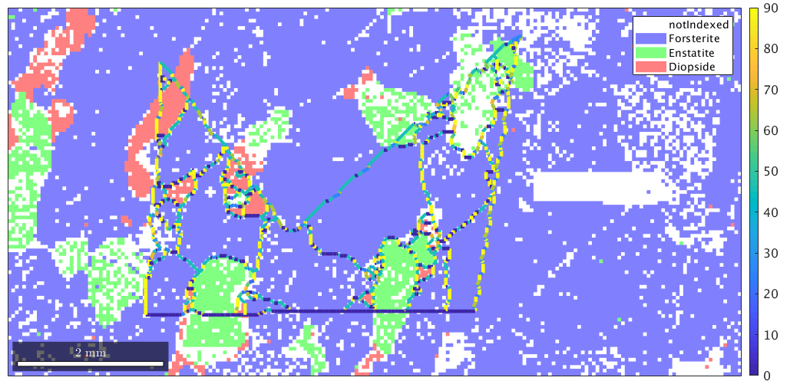 We see that the angle between the grain boundary direction and the x-axis takes only values 0, 45 and 90 degrees. After applying smoothing we obtain a much better result
% smooth the grain boundaries grains = smooth(grains) % plot the raw data plot(ebsd) % start overide mode hold on % plot the boundary of all grains plot(grains.boundary,angle(grains.boundary.direction,xvector)./degree,'linewidth',3.5) mtexColorbar % stop overide mode hold off
grains = grain2d
Phase Grains Pixels Mineral Symmetry Crystal reference frame
1 28 2756 Forsterite mmm
2 9 452 Enstatite mmm
3 22 231 Diopside 12/m1 X||a, Y||b, Z||c*
boundary segments: 1252
triple points: 61
Properties: GOS, meanRotation
e =
PropertyEvent with properties:
AffectedObject: [1×1 ColorBar]
Source: [1×1 matlab.graphics.internal.GraphicsMetaProperty]
EventName: 'PostSet'
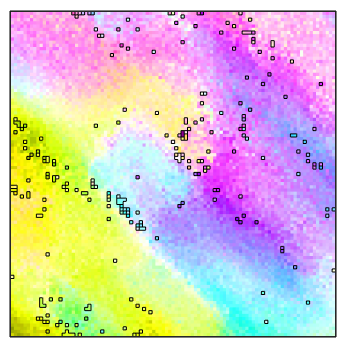
Grain reconstruction by the multiscale clustering method
When analyzing grains with gradual and subtle boundaries the threshold based method may not lead to the desired result.
Let us consider the following example
mtexdata single
oM = ipdfHSVOrientationMapping(ebsd);
oM.inversePoleFigureDirection = mean(ebsd.orientations) * oM.whiteCenter;
oM.maxAngle = 5*degree;
plot(ebsd,oM.orientation2color(ebsd.orientations))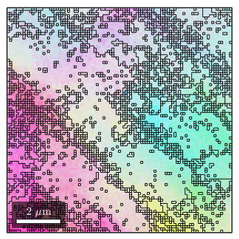 We obeserve that the are no rapid changes in the orientation which would allow for applying the threshold based algorithm. Setting the threshold angle to a very small value would include many irrelevant or false regions.
grains_high = calcGrains(ebsd,'angle',1*degree); grains_low = calcGrains(ebsd,'angle',0.5*degree); figure plot(ebsd,oM.orientation2color(ebsd.orientations)) hold on plot(grains_high.boundary) hold off figure plot(ebsd,oM.orientation2color(ebsd.orientations)) hold on plot(grains_low.boundary) hold off
 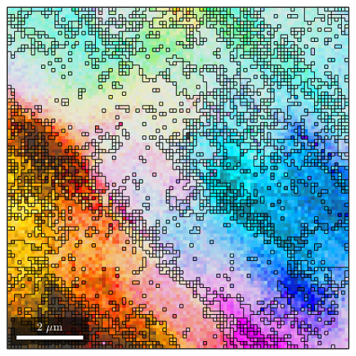
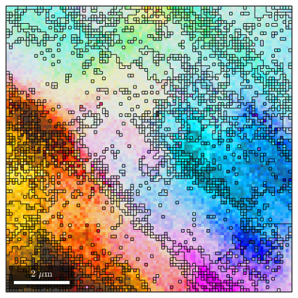 As an alternative MTEX includes the fast multiscale clustering method (FMC method) which constructs clusters in a hierarchical manner from single pixels using fuzzy logic to account for local, as well as global information.
Analogous with the threshold angle, a single parameter, C_Maha controls the sensitivity of the segmentation. A C_Maha value of 3.5 properly identifies the subgrain features. A C_Maha value of 3 captures more general features, while a value of 4 identifies finer features but is slightly oversegmented.
grains_FMC = calcGrains(ebsd('indexed'),'FMC',3.8) grains = calcGrains(ebsd('indexed')) % smooth grains to remove staircase effect grains_FMC = smooth(grains_FMC); grains = smooth(grains);
grains_FMC = grain2d
Phase Grains Pixels Mineral Symmetry Crystal reference frame
1 17 10201 Al m-3m
boundary segments: 1552
triple points: 14
Id Phase Pixels GOS phi1 Phi phi2
1 1 7 0.0084358 317 128 159
2 1 1120 0.025113 239 74 319
3 1 517 0.0100267 238 75 320
4 1 1783 0.0220658 56 103 40
5 1 11 0.00744635 57 104 220
6 1 2 0.00276888 237 79 322
7 1 7 0.00797851 343 43 249
8 1 989 0.0126827 236 79 322
9 1 1060 0.0197615 239 75 320
10 1 76 0.00793592 238 75 320
11 1 1556 0.0219625 238 77 320
12 1 349 0.011464 237 77 320
13 1 401 0.0103684 342 41 251
14 1 402 0.0121173 238 77 320
15 1 184 0.0128468 237 77 319
16 1 957 0.0176069 316 129 74
17 1 780 0.0123911 238 78 321
grains = grain2d
Phase Grains Pixels Mineral Symmetry Crystal reference frame
1 1 10201 Al m-3m
boundary segments: 404
triple points: 0
Id Phase Pixels GOS phi1 Phi phi2
1 1 10201 0.0344807 237 77 320
We observe how this method nicely splits the measurements into clusters of similar orientation
%plot(ebsd,oM.orientation2color(ebsd.orientations)) plot(ebsd,oM.orientation2color(ebsd.orientations)) % start overide mode hold on plot(grains_FMC.boundary,'linewidth',1.5) % stop overide mode hold off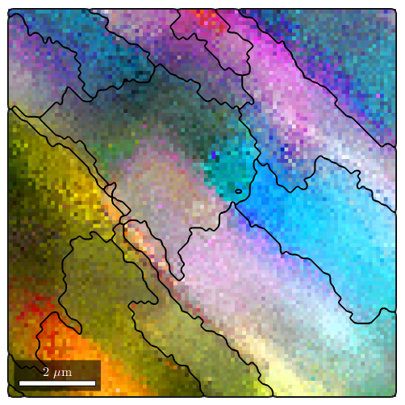
| DocHelp 0.1 beta |